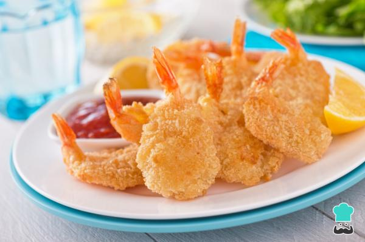

Regresar
Camarones empanizados
Receta para camarones empanizados

Ingredientes
- 500 gramos de camarones
- 1 vaso de harina
- 1 cucharadita de ajo en polvo
- 1 pisca de sal
- 1 pisca de pimienta
- 2 huevos
- 1 pizaca de enpolvo para empanizar
Elaboración (Pasos)
- pela los camarones dejando solo la cola y cortalos po el lomo para retirarles el tubo digestivo
una vez hecho esto,ya los habremos limpiado y dejando con forma de mariposa.
- coge un recipiene y prepara la harina para empanizar los camrones,.para ello,mézclala
con ajo puro en polvo,sal y pimienta
- aparte,bate los huevos y resérvelos en ese plato,no lo mezcles con la harina
- agarra un saarten grande con aceite suficiente como para cubir los camrones y ponla a
fuego medio para que el aceite se caliente
- para rebozar los camarones,pasa uno de ellos primero en la harina preparada,procurando que se pegue
muy bien por todo laso.pasalo por el huevo batido y,finalmente,por el polvo para empanizar
- frie los camarones rebozados cuando el aceite esté caliente hasta que se doren
- ¡Listo! ya puedes servir la receta de camarones empanizados frios